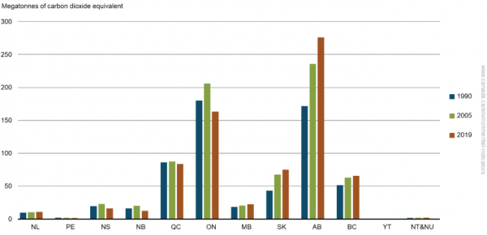

Quels sont les incitatifs disponibles pour les entreprises de l'Ontario (Canada) pour aider à la transition vers les énergies renouvelables ?
Et si vous étiez payé pour la transition de votre bâtiment vers les énergies renouvelables ?
25 octobre 2021
Cet article est le deuxième d'une série d'articles présentant les divers programmes et incitatifs offerts aux entreprises à travers le Canada et dans le monde pour les aider à effectuer une transition totale ou partielle vers les énergies renouvelables. Dans notre premier article, nous avons présenté les différents programmes disponibles dans les provinces de l’Atlantique au Canada, nous nous dirigeons maintenant vers l'ouest, au centre du Canada, en commençant par l'Ontario.
Restez à l'affût alors que nous poursuivons notre tournée de toutes les provinces canadiennes au cours des prochaines semaines.
Avant de commencer, examinons d'abord le profil énergétique de la province de l'Ontario.
Le Profil Énergétique de l'Ontario
En 2019, les émissions combinées de l'Alberta et de l'Ontario, les plus gros émetteurs de gaz à effet de serre au Canada, représentaient 60% (38% et 22%, respectivement) du total national. En 1990, les émissions de GES de l'Ontario étaient plus élevées que celles des autres provinces en raison de son importante industrie manufacturière. Les émissions de l'Alberta ont par la suite dépassé celles de l'Ontario, avec une augmentation de 61% depuis 1990, principalement en raison de l'augmentation de l'industrie pétrolière et gazière. Les émissions de l'Ontario ont diminué entre 1990 et 2019, principalement en raison de la fermeture de centrales électriques alimentées au charbon.

Tableau 1 : Émissions de gaz à effet de serre par province et territoire, Canada, 1990, 2005 et 2019
Les secteurs les plus émetteurs en Ontario sont les transports à 35% des émissions, les industries lourdes (y compris le fer, l'acier et les produits chimiques) à 24% et les bâtiments (résidentiels et commerciaux) à 22%.
D'après les données de 2018, l'Ontario est le deuxième plus grand producteur d'électricité au Canada et abrite plus de 98% des installations solaires du pays. L'Ontario se classe actuellement au 5e rang dans la liste des provinces pour le potentiel solaire au Canada selon www.energyhub.org . En 2018, environ 96% de l'électricité en Ontario était produite à partir de sources à zéro émission de carbone : 60% à partir du nucléaire, 26% de l'hydroélectricité, 7% de l'éolien et 2% de l'énergie solaire.
Mais la demande totale d'énergie de l'Ontario est toujours l'une des plus importantes au Canada (2e en 2017), les secteurs industriel et commercial combinés représentant plus de la moitié de la demande (53% en 2017). En termes de types de combustibles, le gaz naturel représentait en 2017 28% de la demande, derrière les produits pétroliers raffinés (PPR) à 48 % et devant l'électricité à 16%. La demande de gaz naturel de l'Ontario représentait quant à elle 24% de la demande canadienne totale en 2017, ce qui en fait la plus grande province consommatrice de gaz naturel après l'Alberta.
Programmes et incitatifs disponibles en Ontario
Maintenant que vous avez une meilleure compréhension du profil énergétique de l'Ontario et des sources d'émissions de GES, examinons les divers programmes et incitatifs offerts aux entreprises de l'Ontario pour faciliter la transition vers les énergies renouvelables.
Même si l'Ontario a grandement amélioré ses émissions de GES depuis 1990, beaucoup de travail reste à faire pour atteindre les différentes cibles fixées par le gouvernement fédéral, le gouvernement provincial et la ville de Toronto. Et comme nous pouvons le constater d'après les données présentées ci-dessus, les secteurs commercial et industriel peuvent jouer un rôle important dans la réduction des émissions de GES en Ontario (et dans le monde). Les systèmes d'énergie renouvelable peuvent également augmenter la résilience du bâtiment (au même titre qu’une génératrice d'urgence) et même réduire vos coûts énergétiques.
Voici quelques programmes et incitatifs disponibles en Ontario en date du 1er octobre 2021. Il est important de noter que même si la province a de nombreux programmes et incitatifs pour l'efficacité énergétique tels que le Programme de rénovation, cet article se concentrera majoritairement sur les programmes aidant les organismes commerciaux, industriels et institutionnels à passer totalement ou partiellement aux énergies renouvelables.
ÉCONOMIES DE TAXES SUR LES ÉNERGIES RENOUVELABLES DISPONIBLES AU CANADA
Tel que présenté dans notre revue des programmes pour les provinces de l’Atlantique, le gouvernement canadien offre des économies d'impôt intéressantes aux entreprises pour réaliser leur transition énergétique. En vertu des catégories 43.1 et 43.2 décrites à l’annexe II du Règlement de l’impôt sur le revenu, certains coûts de capital liés à des systèmes qui produisent de l’énergie à partir de sources d’énergie renouvelable ou de combustibles dérivés de déchets ou qui économisent de l’énergie en utilisant un carburant de façon plus efficace sont admissibles à une déduction pour amortissement accéléré.
Afin d’être admissibles à titre de Frais liés aux énergies renouvelables et aux économies d’énergie au Canada (FEREEC), les dépenses doivent avoir été engagées dans le cadre de la mise en œuvre d’un projet pour lequel il est raisonnable de s’attendre à ce qu’au moins 50% des coûts en capital aient été engagés pour du matériel décrit dans les catégories 43.1 ou 43.2.
Selon le guide technique pour les catégories 43.1 et 43.2, voici quelques catégories qui sont admissibles à ces économies d’impôts pour les énergies renouvelables :
- Pompe géothermique
- Systèmes de conversion de l’énergie éolienne
- Matériel photovoltaïque de production d’électricité
- Matériel d’énergie géothermique
- Matériel de production d’électricité à partir de l’énergie des vagues, marémotrice ou hydroliennes
- Réseaux énergétiques de quartier/équipement de réseau énergétique de quartier
- Matériel de stockage d’énergie électrique
- Bornes de recharge pour véhicules électriques
- Et plus
Source: Économie d’impôt pour l’industrie https://www.rncan.gc.ca/science-donnees/financement-partenariats/occasions-de-financement/financement-subventions-incitatifs/economies-dimpots-pour-lindustrie/5148
ÉCONOMIES DE TAXES SUR LES ÉNERGIES RENOUVELABLES DISPONIBLES EN ONTARIO
1 - Facturation Nette (Net Metering)
Remplaçant l'ancien programme provincial de Tarif d’Achat (TIF ou Feed-in Tariff), le nouveau Programme de Facturation Nette de l'Ontario permet aux particuliers et aux entreprises de réduire leur facture d'électricité en produisant de l'électricité à l'aide de l’énergie éolienne, solaire ou d'autres sources d'énergie renouvelable.
Une fois approuvé et connecté au réseau, vous pourriez recevoir un crédit directement sur votre facture d'électricité pour l'électricité qui est renvoyée au réseau.
La facturation nette peut ne pas être disponible pour tous les bâtiments et toutes les régions. Pour plus d'informations, contactez votre distributeur local.
2 - TransformTO
TransformTO est l'ambitieuse stratégie d'action climatique de la ville de Toronto. Approuvé à l'unanimité par le conseil municipal en juillet 2017, il comprend un ensemble d'objectifs et de stratégies à long terme et à faible émission de carbone pour réduire les émissions locales de gaz à effet de serre et améliorer la santé, développer l’économie et améliorer l'équité sociale.
Le 2 octobre 2019, le conseil municipal a voté à l'unanimité pour déclarer une urgence climatique et accélérer les efforts d'atténuation et d'adaptation au changement climatique, en adoptant un objectif de réduction des émissions plus strict de net zéro d'ici 2050, ou plus tôt. Les cibles de réduction des émissions de gaz à effet de serre (GES) de Toronto sont désormais les suivantes (basées sur les niveaux de 1990) :
- 30% d'ici 2020
- 65% d'ici 2030
- Net zéro d'ici 2050, ou plus tôt
Voici une liste d'incitatifs et de programmes dérivés de cette initiative et offerts aux entreprises de la grande région de Toronto.
2.1 – Subventions, par TAF (The Atmospheric Fund)
Vous êtes admissible à un financement si :
- Vous êtes une municipalité, un organisme sans but lucratif ou un organisme de bienfaisance enregistré établi dans la grande région de Toronto et de Hamilton (GTHA).
- Votre projet a le potentiel de générer une réduction de carbone à grande échelle dans GTHA.
Plus d'informations : https://taf.ca/grants/
2.2 – Financement de projet, par TAF (The Atmospheric Fund)
Les entreprises et les projets de technologies propres génèrent des solutions à faible émission de carbone pour alimenter la prochaine économie. Le TAF investit dans ces opportunités de grande qualité et amène d'autres investisseurs avec eux.
Plus d'informations : https://taf.ca/impact-investing/
2.3 - Prêts pour la rénovation énergétique
Grâce à son programme Energy Retrofit Loans, la Ville de Toronto offre des prêts à faible taux d'intérêt pour aider les propriétaires d'immeubles à améliorer l'efficacité énergétique de leurs bâtiments. Tous les immeubles situés à Toronto sont admissibles.
La Ville offre un financement jusqu'à 100% des coûts du projet, à un taux égal au coût d'emprunt de la Ville, avec des modalités de remboursement allant jusqu'à 20 ans.
Les projets éligibles comprennent :
- Rénovations d'éclairage
- Chaudières, refroidisseurs et CVC à haut rendement
- Améliorations de l'enveloppe du bâtiment
- Systèmes et contrôles d'automatisation du bâtiment
- Pompes à chaleur
- Projets d'énergie renouvelable
- Stockage d'énergie
- Changement de carburant
- Autres mesures/technologies de modernisation
3 - SolarTO
La ville de Toronto offre des consultations et des conseils gratuits aux résidents et aux entreprises pour soutenir l'installation de systèmes solaires photovoltaïques sur les maisons et les bâtiments de Toronto.
SolarTO offre les services suivants, sans frais, pour les immeubles commerciaux et les propriétés situées à Toronto :
- PV solaire (toit)
- Contrôle visuel virtuel pour déterminer l'opportunité.
- Vérification du zonage et aménagement conceptuel/dimensionnement du système et estimations budgétaires.
- Assistance pour remplir la demande préliminaire de Toronto Hydro Distributed Energy Resource (DER).
- Abris d’auto solaire (stationnement)
- Vérification visuelle virtuel pour déterminer l'opportunité
- Vérification du zonage et aménagement conceptuel/dimensionnement du système et estimations budgétaires
- Assistance à l'application DER de Toronto Hydro, assistance à l'analyse géotechnique et orientation EASR/REA.
- Stockage d'énergie
- Options et consultation de haut niveau (coût et capacité), briefing sur la classe A.
- Taille et résultats conceptuels, estimations budgétaires.
- Aide à la demande de DER de Toronto Hydro. Conseils sur la réalisation d'un rapport de faisabilité avec un tiers.
CONCLUSION
Si vous possédez ou avez un bail à long terme sur un immeuble commercial, industriel ou institutionnel en Ontario, nous vous invitons à explorer les avantages de l'énergie renouvelable.
La transition de votre (vos) bâtiment(s) vers les énergies renouvelables est plus facile que jamais et peut vous aider à réduire vos émissions de GES, à augmenter votre résilience et même à réduire vos coûts énergétiques.
Et avec des solutions comme vadiMAP, vous pouvez facilement découvrir le potentiel des énergies renouvelables et recevoir une prescription personnalisée de système énergétique et thermique pour une fraction du coût normalement facturé par les bureaux d'études traditionnels.
Contactez-nous dès maintenant pour en savoir plus ou visitez notre site Web. Ensemble nous pouvons faire la différence.
La suite?
Abonnez-vous à notre infolettre
Passez à l'action avec une prescription vadiMAP en quelques clicks!